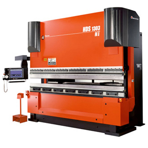
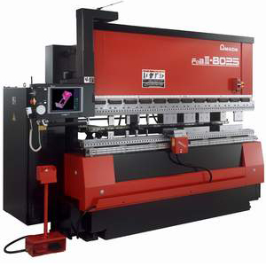
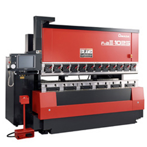
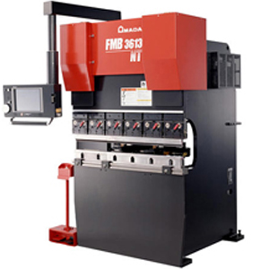
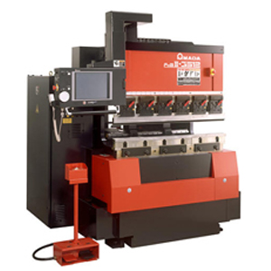

HDS-1303NT

FBDIII1025NT

FBDIII8025NT

FMB3613NT

HD-NTシリーズは、これまで加工に制限のあった深曲げを可能にし､試し曲げを削減するお客さまの加工範囲を拡大するベンディングマシンです。小物から大物まで、薄板から厚板まで､小型から大型まであらゆるニーズに対応したフルラインナップ！アマダ独自のハイブリッド・ドライブシステムを搭載し、環境にも配慮したエコマシンです。

展開図上の曲げ線をタッチして、曲げ順序を決定していきます。曲げの状況を3Dシュミレーション画面で確認しながらの決定が可能です。AMNC/PCでは、曲げ順序の決定のみとなります。曲げ寸法・曲げ角度・曲げ長さ等はAP100からの展開情報に付随してきますので、入力する必要はありません。

Donec ullamcorper nulla non metus auctor fringilla. Vestibulum id ligula porta felis euismod semper. Praesent commodo cursus magna, vel scelerisque nisl consectetur. Fusce dapibus, tellus ac cursus commodo.